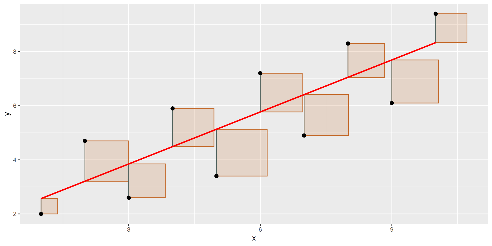
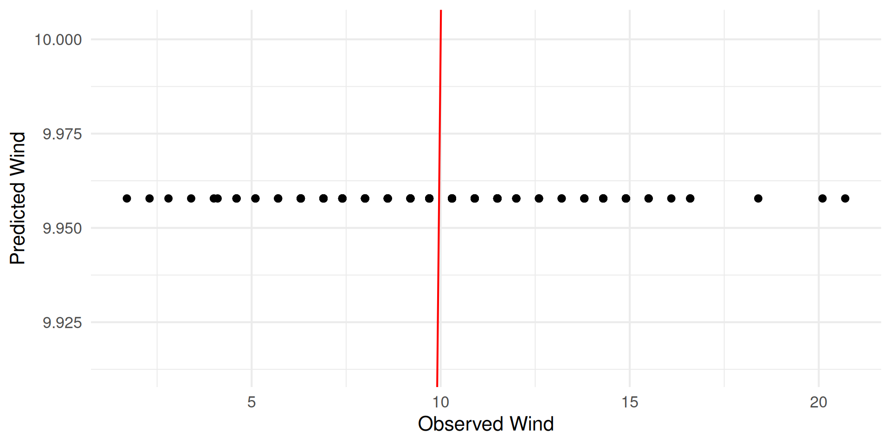
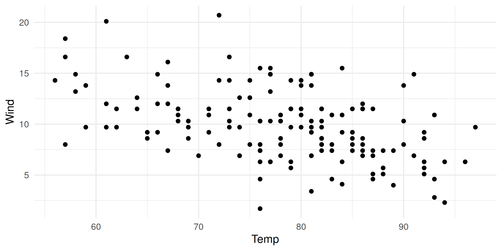
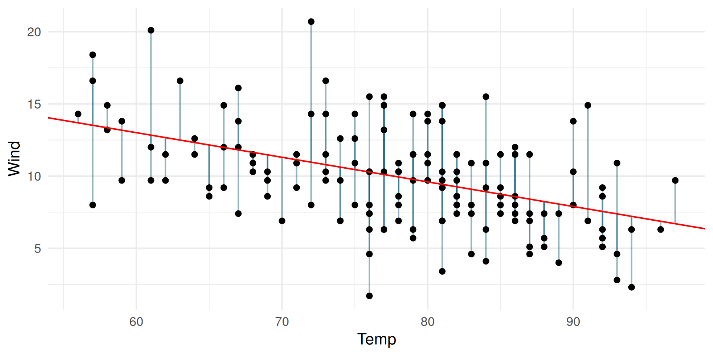
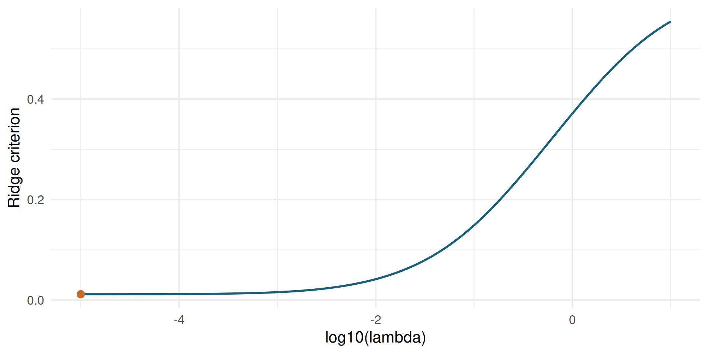
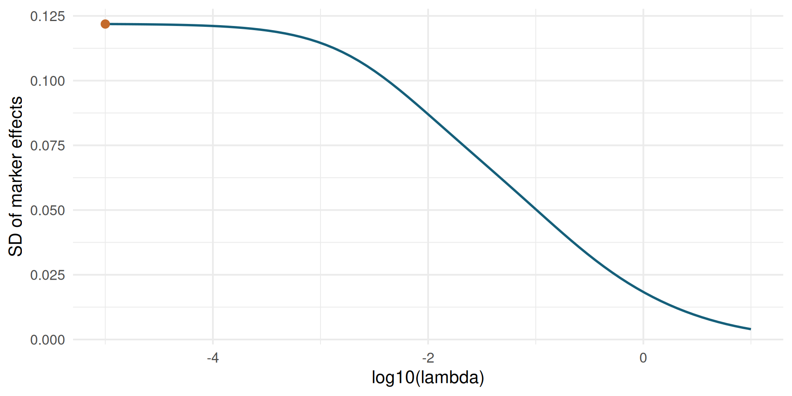

toy_dat = data.frame(
x = 1:10,
y = c(2.0, 4.7, 2.6, 5.9, 3.4, 7.2, 4.9, 8.3, 6.1, 9.4)
)
toy_fit = lm(y ~ x, data = toy_dat)
toy_dat$pred = predict(toy_fit)
toy_squares = residual_square_data(toy_dat, "x", "y", "pred", every = 1, scale = 0.55)
ggplot(toy_dat, aes(x = x, y = y)) +
geom_rect(
data = toy_squares,
aes(xmin = xmin, xmax = xmax, ymin = ymin, ymax = ymax),
inherit.aes = FALSE,
fill = "#c46a2b",
color = "#c46a2b",
alpha = 0.18
) +
geom_segment(aes(xend = x, yend = pred), color = "#155f7a", alpha = 0.65) +
geom_point(size = 2.2) +
geom_line(aes(y = pred), color = "red", linewidth = 1) +
labs(x = "x", y = "y")Linear Regression
Advanced Statistics Lab
Claas Heuer
Linear Regression
Linear Regression deals with fitting predicted values based on input features and regression weights to observations.
In ordinary least squares, we aim to find regression weights that minimize the mean squared error between predicted and observed values:
\[ \hat{\beta} = \operatorname*{arg\,min}_{\beta} \sum_{i = 1}^{n} (y_i - x_i \beta)^2 \]
Least-Squares Geometry
\[ e_i = y_i - \hat{y}_i \]
\[ \operatorname{MSE} = \frac{1}{n}\sum_{i=1}^{n} e_i^2 \]
The full regression plots show residuals as vertical segments.
The toy plot isolates the squared-error pieces.
Toy Least-Squares Piece

Feature / Design Matrix
A Feature or Design Matrix maps observations to individual feature criteria.
The most fundamental feature matrix is a column vector with all 1s, meaning every observation has the same expression for that feature.
In that case, the feature serves as a mapping to the overall mean of the observations.
Estimate The Mean With OLS
library(ggplot2)
library(knitr)
theme_set(theme_minimal(base_size = 16))
# load example data
data(airquality)
# our response vector is Wind
y = airquality$Wind
# create a design matrix for the mean
X = matrix(data = 1, nrow = length(y), ncol = 1)
colnames(X) = "Intercept"
str(X) num [1:153, 1] 1 1 1 1 1 1 1 1 1 1 ...
- attr(*, "dimnames")=List of 2
..$ : NULL
..$ : chr "Intercept"MSE Function
Fit The Intercept
Predicted vs Observed

Raw Data And Intercept

Multiple Linear Regression
When there is more than one feature in the design matrix we call that Multiple Linear Regression.
The overall principle of the problem remains the same: We aim to minimize the mean squared error of our predictions.
Add Temperature
# our response vector is Wind
y = airquality$Wind
# now we also want another feature: Temp
temp = airquality$Temp
# create a design matrix for the mean
X = matrix(data = 1, nrow = length(y), ncol = 1)
# add temperature as a feature to our design matrix
X = cbind(
X,
temp
)
colnames(X) = c("Intercept", "Temp")Wind vs Temp

Fit Multiple Regression
Fitted Slope
pred = X %*% res$par
dat = data.frame(
Wind = y,
Temp = airquality$Temp,
pred = as.numeric(pred),
id = 1:length(y)
)
ggplot(dat, aes(x = Temp, y = Wind)) +
geom_segment(aes(xend = Temp, yend = pred), color = "#155f7a", alpha = 0.45) +
geom_point() +
geom_abline(intercept = res$par[1], slope = res$par[2], color = "red") +
labs(x = "Temp", y = "Wind")
Ridge Regression
\[ \min_{\beta} \left( \sum_{i=1}^{n} \left( y_i - \beta_0 - \sum_{j=1}^{p} \beta_j x_{ij} \right)^2 + \lambda \sum_{j=1}^{p} \beta_j^2 \right) \]
The ridge parameter \(\lambda\) controls how much we penalize large marker effects. We can visualize the solution space by evaluating the ridge criterion on a grid of \(\lambda\) values.
Closed-Form Ridge Solution
For a fixed \(\lambda\), ridge regression has an analytical solution.
If \(X = [\mathbf{1}, M]\) and the intercept is not penalized:
\[ \hat{\beta}_{\lambda} = \left(X'X + \lambda P\right)^{-1}X'y, \qquad P = \begin{bmatrix} 0 & 0 \\ 0 & I_p \end{bmatrix}. \]
With centered markers and centered response, as in the next code block:
\[ \hat{u}_{\lambda} = \left(\frac{M_c'M_c}{n} + \lambda I_p\right)^{-1} \frac{M_c'y_c}{n}, \qquad \hat{\beta}_0 = \bar{y}. \]
Lambda Solution Space
library(BGLR)
data(wheat)
subset = 1:100
y_ridge = wheat.Y[subset,2]
M_ridge = wheat.X[subset,1:300]
M_centered = scale(M_ridge, center = TRUE, scale = FALSE)
y_centered = y_ridge - mean(y_ridge)
n_obs = length(y_ridge)
fit_ridge_lambda <- function(lambda, y_centered, M_centered) {
u = solve(
crossprod(M_centered) / n_obs + diag(lambda, ncol(M_centered)),
crossprod(M_centered, y_centered) / n_obs
)
pred = mean(y_ridge) + M_centered %*% u
mse = mean((y_ridge - pred)**2)
penalty = lambda * sum(u**2)
data.frame(lambda = lambda, mse = mse, penalty = penalty,
criteria = mse + penalty, sd_marker_effect = sd(as.numeric(u)))
}
lambda_grid = 10^seq(-5, 1, length.out = 80)
ridge_path = do.call(rbind, lapply(lambda_grid, fit_ridge_lambda,
y_centered = y_centered, M_centered = M_centered))
best_lambda = ridge_path[which.min(ridge_path$criteria), ]
best_lambda lambda mse penalty criteria sd_marker_effect
1 1e-05 0.01157643 4.447269e-05 0.0116209 0.1218662Ridge Criterion

Marker Shrinkage

Ridge In The Original Lab
Ridge Objective
mse_ridge <- function(par, y, M, X) {
b = par[1:ncol(X)]
mu = X %*% b
u = par[(ncol(X) + 1):(length(par) - 1)]
pred = mu + M %*% u
mse = mean((y - pred)**2)
ridge_param = par[length(par)]
ridge = ridge_param * sum(u**2)
criteria = mse + ridge
if(ridge_param < 0) {
criteria = 9999999
}
return(criteria)
}Mixed Model Comparison
Now we compare the results from the optimization to an equivalent mixed model approach with a single randome effect:
\[\begin{bmatrix} X'X & X'Z \\ Z'X & Z'Z+I\lambda \end{bmatrix} \begin{bmatrix} \beta \\ u \end{bmatrix} = \begin{bmatrix} X'y \\ Z'y \end{bmatrix}\]